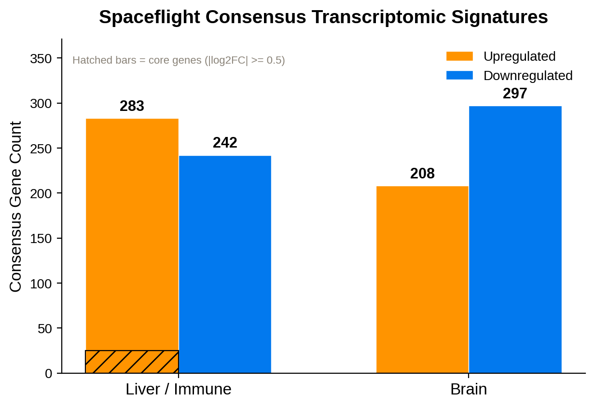
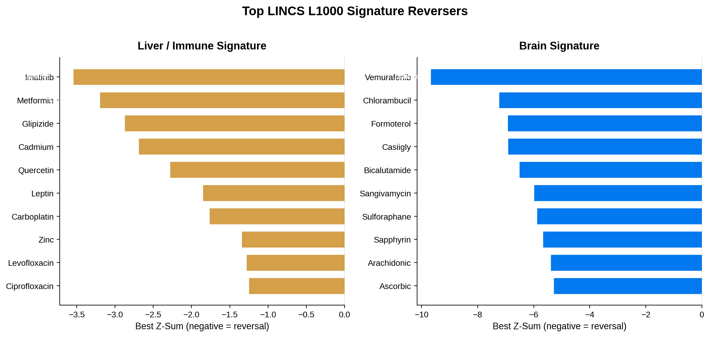
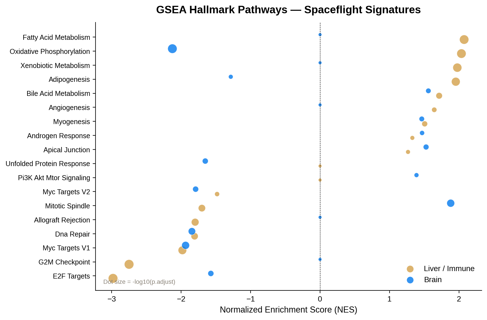
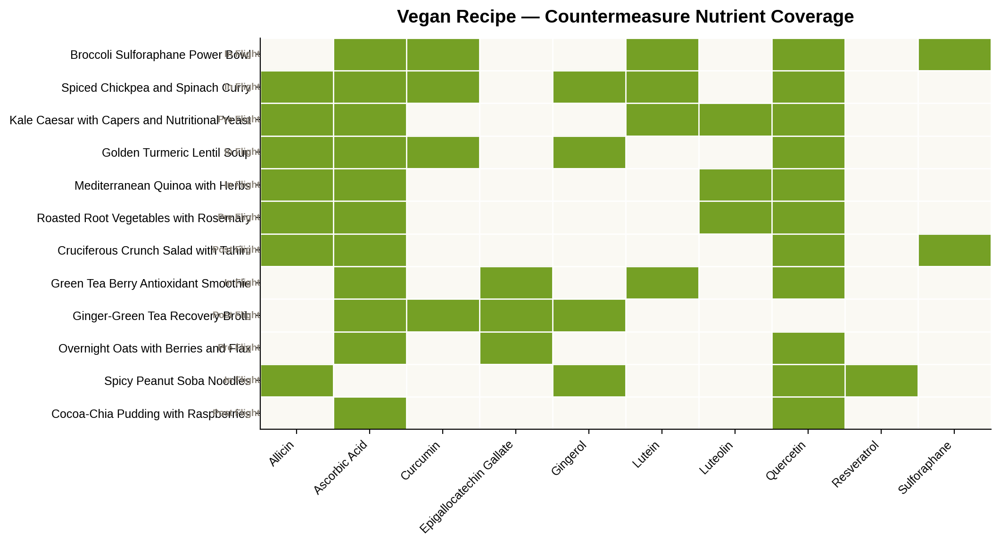
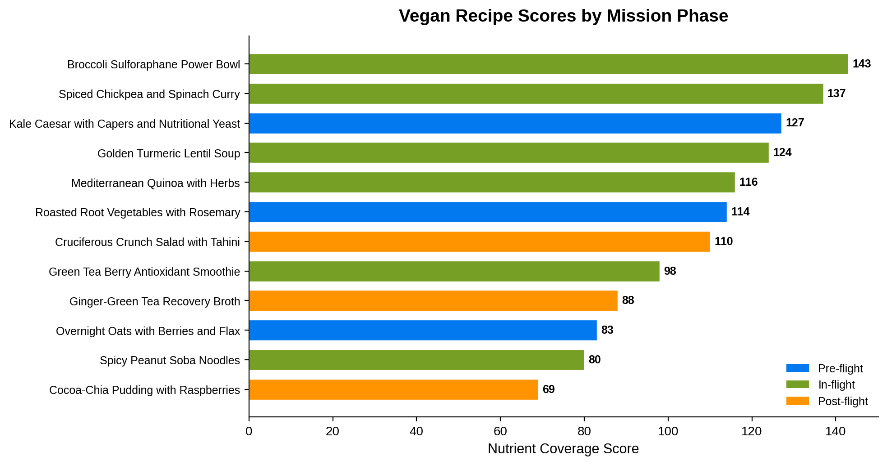
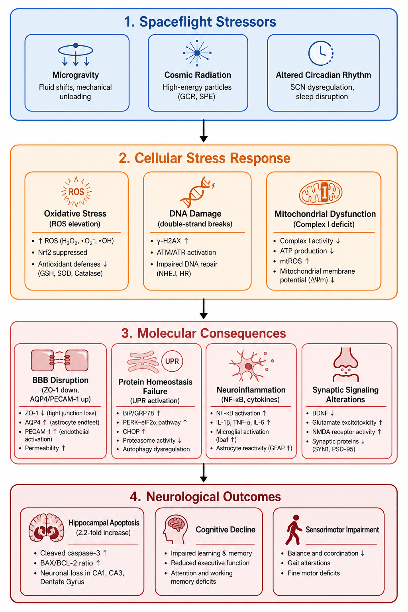
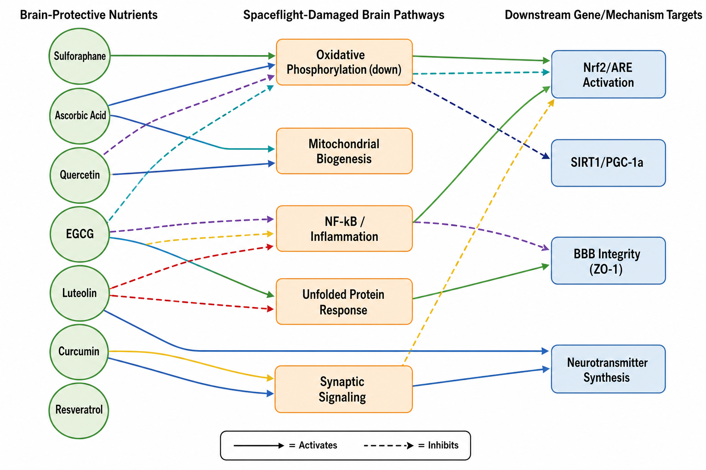
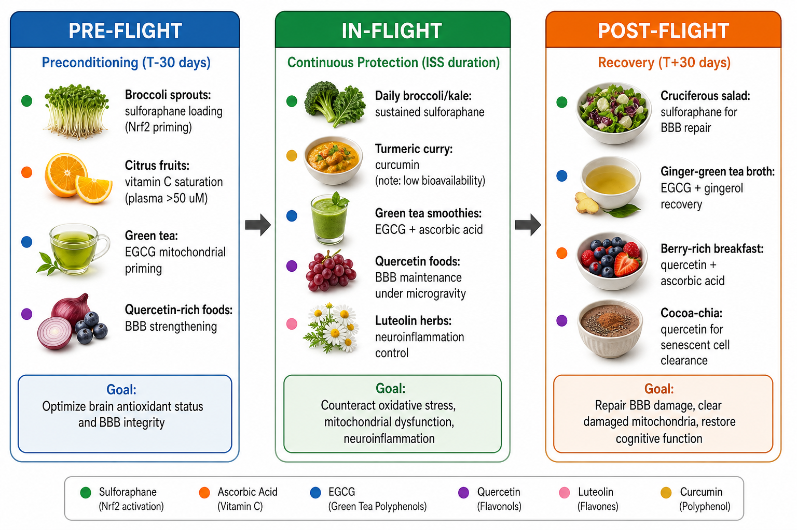

Spaceflight induces coordinated transcriptomic stress responses across
tissues. This pipeline (1) enumerates and screens 160 NASA OSDR rodent ISS RNA-seq studies,
meta-analyzing the 15 with usable differential-expression signal via DESeq2 per study and a
random-effects (metafor) consensus across studies; (2) derives a
525-gene liver/immune signature (283 up, 242 down, 25 core) and a
505-gene brain signature (208 up, 297 down, 13 core); (3) screens the LINCS L1000
connectivity compendium — 219 liver/immune and 221 brain candidate compounds — for
transcriptomic "opposite forcing" of each signature, annotated with DrugBank 5.1.8, the Broad
Drug Repurposing Hub, and ChEMBL; (4) validates biological plausibility with GSEA/ORA
(Hallmark, Reactome, GO BP) and JensenLab DISEASES enrichment; and (5) maps therapeutic hits
onto FooDB + NutriChem 2.0 to surface 10 bioactive vegan nutrients, translated into
12 curated recipes organized by mission phase (pre-/in-/post-flight).
Spaceflight transcriptomic signatures & vegan nutritional countermeasures
A reproducible pipeline that builds consensus transcriptomic signatures from NASA OSDR rodent ISS RNA-seq studies, screens the LINCS L1000 perturbation compendium for compounds that reverse them ("opposite forcings"), validates hits with functional enrichment, and translates the results into a curated vegan nutrition layer organized by mission phase.
Headline: across 15 meta-analyzed NASA OSDR rodent spaceflight studies (160 screened), consensus liver/immune (525 genes) and brain (505 genes) signatures were screened against LINCS L1000; the top brain reverser was vemurafenib (z = −9.68) and the top liver/immune reverser was imatinib. Ten bioactive nutrients were mapped to 12 vegan recipes across pre-/in-/post-flight mission phases.
Abstract
Highlights
Consensus signatures
525 liver/immune genes (283↑/242↓, 25 core) and 505 brain genes (208↑/297↓, 13 core) meta-analyzed across 15 of 160 screened OSDR studies.
Opposite-forcing screen
219 liver/immune and 221 brain LINCS L1000 candidate reversers; top hits imatinib (liver/immune) and vemurafenib (brain, z = −9.68).
Nutritional translation
10 bioactive vegan nutrients (incl. sulforaphane, quercetin, ascorbic acid) mapped from reversing compounds via FooDB.
Mission-phased recipes
12 curated vegan recipes; top nutrient coverage: Broccoli Sulforaphane Power Bowl (score 143).
Selected figures





Neurological companion analysis
A brain-focused reanalysis of the same rodent ISS transcriptomic data (OSD-525, OSD-564, OSD-612, OSD-613), pairing LINCS L1000 connectivity mapping with nutrient pharmacokinetic profiling to propose a phased, diet-based neuroprotection strategy.
Dominant pathology: mitochondrial dysfunction, protein-homeostasis failure and DNA-repair suppression, offset by upregulated synaptic/neuronal signaling. Top nutrient reversers by PK + LINCS evidence: sulforaphane (Nrf2 activator), ascorbic acid (BBB transport), quercetin (BBB integrity) — see figure legends for the full mechanistic detail, including the caveat that curcumin's oral bioavailability is ~1000× below its therapeutic target (Kroon et al. 2025).



Data & code
- Report (PDF): report_astronaut_opposite_forcing.pdf · Manuscript (LaTeX): manuscript_astronaut_opposite_forcing.tex
- Pipeline:
scripts/(01 OSD query → 07d Zenodo packaging; R for signature discovery, Python for screening/nutrition/figures) - Data:
data/(study catalogs, processed consensus signatures) ·per_study_DE/(per-study differential expression) - Result tables:
results/tables/(LINCS reversal rankings, GSEA/ORA, nutrient–gene maps, recipe scoring) - Figures:
results/figures/· figure legends - Citation: CITATION.cff · neurological companion: CITATION_neurological.cff
Code is MIT-licensed; source data (NASA OSDR, LINCS L1000, DrugBank, ChEMBL, FooDB, JensenLab DISEASES) remain subject to their own licenses — see the Data Sources table in the README. Independent research; not affiliated with or endorsed by NASA.